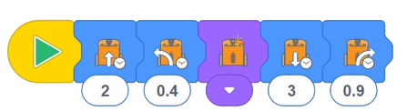

Esta actividad presenta a los estudiantes EdBlocks, aprenden cómo Edison lee EdBlocks y practican el uso de EdBlocks sin conexión.
EdBlocks es un lenguaje de programación de robots que se ha creado utilizando Scratch 3.0 como base.
El lenguaje horizontal basado en iconos se compone de diferentes tipos de bloques, cada uno de los cuales
contiene diferentes instrucciones de programación para el robot Edison.
Los EdBlocks se leen de izquierda a derecha, un bloque a la vez.
• Hay diferentes tipos de EdBlocks que se irán introduciendo con el tiempo.
Hacer que los estudiantes interactúen primero con EdBlocks sin conexión es una buena manera de enseñar
los conceptos básicos de EdBlocks y limitar la confusión en torno a tipos de bloques más avanzados.
• La mayoría de los bloques de la actividad tienen un símbolo de reloj.
Los bloques con este símbolo tienen un campo numérico debajo del bloque que permite a los usuarios
especificar una cantidad de tiempo para que ocurra esa acción.
Entender que este es un campo variable dentro de EdBlocks es un concepto importante al que los estudiantes
están expuestos durante esta actividad.
• Puede ser útil presentar cómo funciona EdBlocks como una actividad de clase completa.
Una diapositiva con la información didáctica crítica de esta actividad se incluye como apéndice al final
de este documento para su uso.
1. Explore la idea de que el tiempo es una variable al realizar una acción.
Analice la importancia de dar una cantidad de tiempo para que el robot realice una acción.
2. ¿Qué pasaría si le dijéramos al robot que avanzara? ¿Cómo sabría qué tan lejos conducir?
3. Hable con los estudiantes sobre la importancia de dar instrucciones exactas en el orden correcto.
Practique el concepto a través de actividades como hacer que la clase le indique paso a paso cómo hacer
un sándwich. Un ejemplo podemos verlo en el siguiente
video.
Orden del programa:
